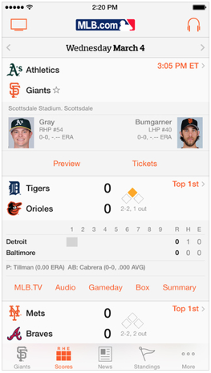

by Micheal Willard
MLB Advanced Media provides an open and accesible API which contains stats, data and related information of each game played going back to 1909. The data stored in this API feeds into the MLB At Bat Application as well as the MLB websites.
The information accessed from the API in those applications also includes links to video feeds, highlights, news and other items in addition to statistics.
This How-To will walk the you through the following items:
It is important to keep in mind that the API focuses on accessing data based on the date and the game played. This can be visualized by looking at the way the MLB At Bat App is laid out. In the image below you can see how the app is paged on a date and lists out all the scores for that date. Clicking on a score will open the stats for that game.
The MLB AM API can be accessed through a base URL:
http://gd2.mlb.com/components/game/mlb/
If you visit the MLB AM API URL you can view the structure set up as series of URL links laid out in a folder hierarchy. You can also visit the Date Level Folder for the above image to get a better idea of how the data translates to the posted image.
I strongly recommend visiting those link and getting a feel for the tiers and drilling down to see just how much data is available and where it is at. There is simply too much data to cover it all here, but if there is something specific you are wanting to access, poking around the API will be the quickest route to finding it.